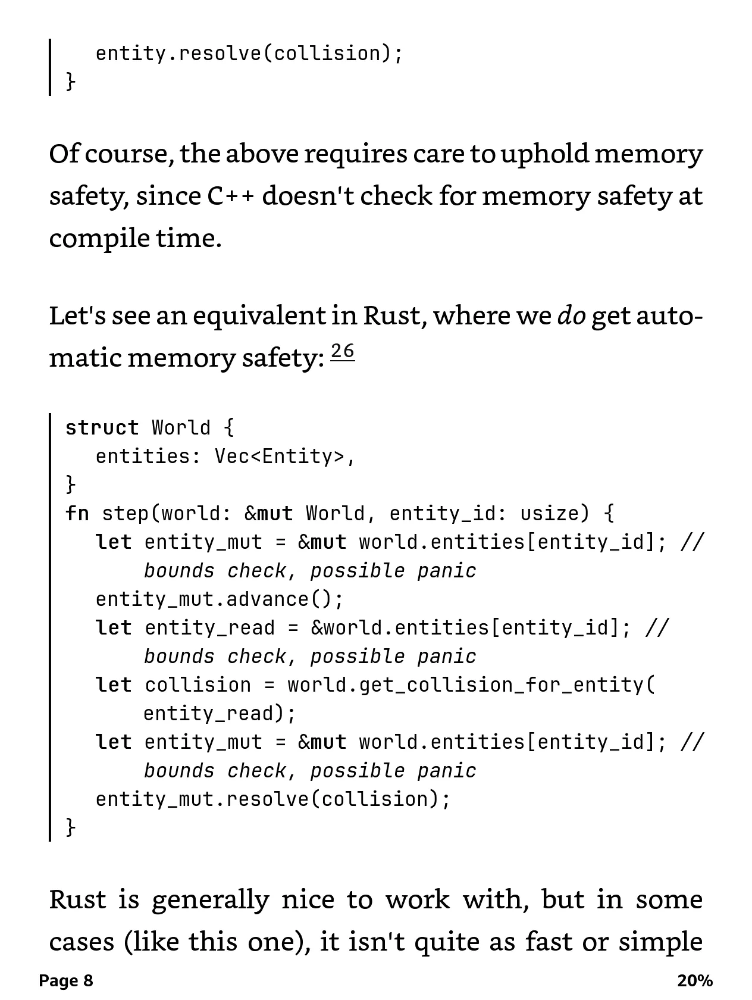

A morning paper for your e-reader, edited for one reader: you.
Every morning Forenoon reads your feeds and the front pages you follow, has a model choose what you would want to read, and sends it to your Kindle as one book with a contents page. Rate each article from the device, and tomorrow's choices learn from it.
It runs on your own machine. The one thing it needs from outside is a model's API key, and a day's choosing costs about two cents of it.
Open source, MIT. One container and one SQLite file. No account with us, nothing phoning home.

Why
Forenoon exists to cut the time spent scrolling, to find the writing you actually care about, and to make an e-reader useful for more than books.
Feeds serve whatever keeps you on them. Aggregators are paid for by advertisers or pushed along by an agenda, and they know far less about you than you could tell them in a paragraph. Forenoon has one job: find what you would choose to read yourself, and put it where you read best. Away from a feed, on e-ink, the scrolling takes care of itself.
How a morning goes
- 1Read everything
Your RSS feeds, including the publications you subscribe to, and the front pages of Hacker News and Lobsters. One day's pool is a few hundred articles.
- 2Rank from the opening
Each candidate is scored against your interests, written in your own words, from its title and first paragraphs. A pointer post is swapped for the article it points at.
- 3Read the best in full
The forty strongest are fetched and read whole, so a teaser with a good title loses to an article with something in it. Several reports of one event become one story.
- 4Choose the day and send it
Eight stories or so, with a reason for each, as one clean book with a contents page. Your ratings from the device shape the next morning.
One measured day: 23 sources including a whole Financial Times, about 165 candidates ranked, 40 read in full, 16 stories delivered in 80 seconds, for about two cents of Claude Haiku.
See what it chose today
Three readers with different interests share one set of sources. Each morning the same pool becomes a different issue. Their newsstands are open to look at, read only, with the model's reason on every card and the archive of everything it weighed and passed over.

Mara
Systems programming, databases and compilers, and the people who build them. Long technical posts over news.
Open Mara's newsstandTheo
Economics, housing and energy policy, and reported pieces on how institutions actually work.
Open Theo's newsstandJune
Science writing, natural history and long reported features; a little news when it matters.
Open June's newsstand
What arrives
Articles stripped to their text and pictures, set for e-ink. Code keeps its font and wraps under its own indent; tables stay tables. No scripts, trackers or remote content reach the device, and each article ends with a row of rating links.



What it does
- Chooses by reading, not by headline. Every candidate is ranked from its title and opening; the best forty are read in full before the day is chosen.
- Learns from you. Rate 1 to 5 from the Kindle or the web pages, with an optional one-tap reason. Describe your interests in your own words and change them whenever you like.
- Stories, not links. A short post that only points at an article is replaced by the article. Several reports of one event share one place in the day.
- Your subscriptions. Publications you pay for come in through their feeds; the articles chosen are read signed in as you, with your own browser's cookie for the site.
- A newsstand and an archive. Web pages show each day's issue and everything the model considered and passed over, with its reasons. Filter by source, rating or date; send anything to the Kindle as a book of its own.
- Add your own. Paste a link to put it in tomorrow's issue, send it now, or file something you have already read along with your rating.
- Clean books. Text and pictures only, with code and tables kept readable on e-ink. Nothing in an article can reach your device or your network.
- No one else's incentives. No ads, no engagement metrics, no telemetry. Your sources, ratings and articles are one SQLite file and a folder on your own machine. What leaves it is what the choosing needs: your interests and the articles' text, sent to the model provider you hold the key for, Claude today. The web pages sit behind a login; only the signed rating links in each book work without one.
Run it
Three containers on any machine that runs Docker: the pipeline, the web pages, and a tunnel if you want the pages and the rating links reachable from outside. A NAS is plenty. You bring an Anthropic API key and a mail relay that your Kindle accepts.
git clone https://github.com/johnhringiv/forenoon
cd forenoon/deploy
cp .env.example .env # the mail server, the API key, your time zone
docker compose up -d
Then create your reader, add your feeds and write your interests in the browser. The setup guide covers the mail relay, Amazon's approved sender list and the tunnel; the product document describes everything it does today.